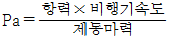
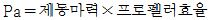
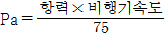
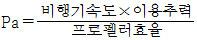
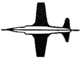
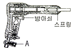
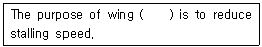
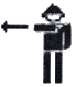
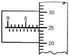
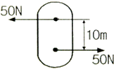

항공기체정비기능사 (2009-03-29 기출문제)
1과목: 비행원리
1. 무게가 2000kgf 인 항공기가 30°로 선회하는 경우 이 항공기에 발생하는 양력은 약 몇 kgf 인가?
- 1214
- 1723
- 2000
- 2309
(정답률: 47%)

2. 어떤 유체관의 입구 단면적은 8cm2, 출구 단면적은 16cm2 이며, 이 때 관의 입구 속도가 10m/s 인 경우 출구에서의 속도는 몇 m/s 인가?(단, 유체는 비압축성 유체이다.)
- 2
- 5
- 8
- 10
(정답률: 71%)
3. 비행기 날개의 양력에 관한 설명으로 틀린 것은?
- 양력은 날개 면적에 비례한다.
- 양력은 유체의 밀도에 비례한다.
- 양력은 날개의 무게에 비례한다.
- 양력은 비행기 속도제곱에 비례한다.
(정답률: 60%)
4. 왕복기관을 이용한 프로펠러 비행기의 이용마력(Pa)을 옳게 나타낸 것은?




(정답률: 53%)
5. 프로펠러에서 프로펠러의 회전면과 특정 깃의 시위선이 이루는 각을 무엇이라 하는가?
- 생크
- 스큐
- 깃각
- 피치각
(정답률: 77%)
6. 다음 중 꼬리 날개의 수직 안정판에 부착되는 조종면은?
- 승강키
- 도움날개
- 방향키
- 스포일러
(정답률: 82%)
7. 그림과 같은 항공기 날개의 형태는?

- 오지형
- 테이퍼형
- 삼각형
- 뒤젖힘형
(정답률: 89%)
8. 다음 중 비행기가 정적세로안정(Static Longitudinal Stability)을 갖는 경우는?
- 받음각의 변화에 의해 발생된 키놀이 모멘트가 비행기를 원래의 평형된 받음각 상태로 돌려보낼 때
- 도움날개의 변화에 의해 발생된 키놀이 모멘트가 비행기를 원래의 평형된 받음각보다 커지는 상태가 될 때
- 받음각의 변화에 의해 발생된 빗놀이 모멘트가 비행기를 원래의 평형된 받음각보다 커지는 상태가 될 때
- 받음각의 변화에 의해 발생된 옆놀이 모멘트가 비행기를 원래의 평형된 받음각보다 커지는 상태가 될 때
(정답률: 60%)
9. 헬리콥터에서 주회전날개의 피치를 동시에 크게 하거나 작게 해서 수직으로 상승, 하강시키는 조종장치는?
- 꼬리날개
- 동시 피치 제어간
- 방향페달
- 주기적 피치 제어간
(정답률: 82%)
10. 수평 등속도로 비행하는 항공기에 작용하는 공기력에 대한 설명으로 옳은 것은?
- 추력이 항력보다 크다.
- 추력과 항력은 같다.
- 양력이 비행기의 무게보다 크다.
- 양력이 비행기의 무게보다 작다.
(정답률: 78%)
11. A, B, C 3대의 비행기가 각각 10000m, 5000m, 1000m 의 고도에서 동일한 속도로 비행하고 있다. 각 비행기의 마하계가 지시하는 마하수의 크기를 비교한 것으로 옳은 것은?
- A＜ B＜ C
- A ＞B ＞C
- A ＞C ＞B
- A = B = C
(정답률: 63%)
12. 날개의 뒷전에 출발 와류가 생기게 되면 앞전 주위에도 이것과 크기가 같고 방향이 반대인 와류가 생기는 데 이것을 무엇이라 하는가?
- 속박 와류
- 말굽형 와류
- 유도 와류
- 날개 끝 와류
(정답률: 60%)
13. 헬리콥터 비행시 역풍지역이 가장 커지게 되는 비행 상태는?
- 정지비행
- 상승가속비행
- 자동회전비행
- 전진가속비행
(정답률: 55%)
14. 항공기 날개에 쳐든각을 주는 주된 목적은?
- 선회성능을 좋게 하기 위해서
- 날개저항을 적게 하기 위해서
- 날개끝 실속을 방지하기 위해서
- 옆놀이의 안정성 향상을 위해서
(정답률: 58%)
15. 다음 중 대기권에서 전리층이 존재하는 곳은?
- 열권
- 중간권
- 극외권
- 성층권
(정답률: 71%)
16. 그림은 리벳 건의 구조를 나타낸 것이다. A 에 해당되는 명칭은?

- 조절기
- 리벳 세트
- 피스톤
- 스로틀 밸브
(정답률: 79%)
17. 금속을 두드려서 나오는 음향으로 결함을 검사하는 방법은?
- 가압법
- 타진법
- 침지법
- 초음파법
(정답률: 93%)
18. 다음 중 정비문서에 대한 설명으로 틀린 것은?
- 기록과 수행이 완료된 모든 정비문서는 공장 자체에서 모두 폐기한다.
- 정비문서의 종류로는 작업지시서, 점검카드작업시트, 점검표 등이 있다.
- 확인 및 점검내용을 명확히 기록하고 수치값은 실측값을 기록한다.
- 작업이 완료되면 작업자는 날인을 한다.
(정답률: 88%)
19. 너트나 볼트를 이용한 고정작업을 할 때 유의사항으로 틀린 것은?
- 치수에 맞는 공구를 사용하여 머리 부분이 손상이 되지 않게 한다.
- 적당히 조인 후 토크렌치를 사용하여 규정 토크값으로 조인다.
- 토크렌치를 사용할 때 특별한 지시가 없는 한 나사산에 절삭유를 사용해서는 안된다.
- 규정 토크값으로 조인 볼트를 안전결선이나 고정핀을 끼울 때 항상 약간 더 조인 후 결선작업을 한다.
(정답률: 85%)
20. 항공기 방식작업의 하나로 전해액에 담겨진 금속을 양극으로 하여 전류를 통한 다음 양극에서 발생하는 산소에 의하여 알루미늄과 같은 금속 표면에 산화피막을 형성하는 부식 처리 방식은?
- 양극 산화 처리
- 알로다인 처리
- 인산염 피막 처리
- 알크래드 처리
(정답률: 73%)
2과목: 항공기정비
21. 리벳작업에 사용되는 공구를 설명한 것으로 옳은 것은?
- C-클램프는 리벳생크 끝을 받치는 공구이다.
- 딤플링(dimpling)은 벅테일을 만드는데 사용되는 공구이다.
- 시트 파스너(sheet fastener)는 판재의 구멍 주위를 움푹 파는 공구이다.
- 버킹바(bucking bar)는 리벳의 벅테일을 만들 때 리벳생크 끝을 받치는 공구이다.
(정답률: 64%)
22. 다음 ( )안에 알맞은 것은?

- drag
- thrust
- tails
- slats
(정답률: 60%)
23. 항공기 외부 세척작업의 종류가 아닌 것은?
- 습식 세척
- 건식 세척
- 광택 작업
- 블라스트 세척
(정답률: 68%)
24. 다음 중 잠금장치를 이용하여 볼트나 너트를 공구와 분리하지 않고 더욱 빠르게 풀고 조이기 위해 만들어진 공구는?
- 박스 렌치
- 오픈엔드 렌치
- 조합 렌치
- 라쳇(Ratchet)핸들 렌치
(정답률: 65%)
25. 그림과 같은 표준 유도신호의 의미는?

- 후진
- 기관정지
- 촉 장착
- 속도감소
(정답률: 89%)
26. 볼트의 호칭 기호가 "AN 4 3 - 6" 일 때 지름과 길이로 옳은 것은?
- 지름은 4/8in, 길이는 6/16in 이다.
- 지름은 3/16in, 길이는 6/8in 이다.
- 지름은 6/8in, 길이는 3/16in 이다.
- 지름은 6/16in, 길이는 4/8in 이다.
(정답률: 64%)
27. 비행장에 설치된 시설물, 장비 및 각종 기기 등에 색채를 이용하여 작업자로 하여금 사고를 미연에 방지할 수 있도록 하는데 청색의 안전색채가 의미하는 것은?
- 방사능 유출위험이 있는 것을 말한다.
- 수리 및 조절 검사 중인 장비를 의미한다.
- 기계 또는 전기 설비의 위험 위치를 의미한다.
- 충돌, 추락, 전복 등의 위험 장비를 의미한다.
(정답률: 70%)
28. 다음 중 정비 지원 업무가 아닌 것은?
- 품질 관리 업무
- 인력 관리 업무
- 정비 관리 업무
- 자재 관리 업무
(정답률: 74%)
29. 관제탑에서 지시하는 신호의 종류 중 활주로 유도로 상에 있는 인원 및 차량은 사주를 경계한 후 즉시 본 장소를 떠나라는 의미의 신호는?
- 녹색등
- 점멸 녹색등
- 흰색등
- 점멸 적색등
(정답률: 73%)
30. 그림은 최소 측정값 1/100mm 인 마이크로 미터로 측정한 결과를 나타낸 것이다. 측정값은 몇 mm 인가?

- 6.25
- 6.75
- 8.75
- 9.00
(정답률: 81%)
31. 캐슬 너트, 핀과 같이 풀림 방지를 할 필요가 있는 부품을 고정할 때 사용하는 것은?
- 피팅
- 파스너
- 코터 핀
- 실(seal)
(정답률: 84%)
32. 압축기 깃에 발생하는 손상으로 국부적으로 색깔이 변했거나 심한 경우 재료가 떨어져 나간 형태로 과열에 의해 손상되는 상태는?
- 마손(burr)
- 구부러짐(bow)
- 균열(crack)
- 소손(burning)
(정답률: 72%)
33. 다음 중 항공기 정비에 해당되지 않는 것은?
- 항공기 제작
- 항공기 개조
- 항공기 세척
- 항공기 연료 보급
(정답률: 60%)
34. Which terms means 0.001A ?
- 1μA
- 1mA
- 1kA
- 1nA
(정답률: 82%)
35. 다음 중 전기화재 또는 유류화재에 가장 부적당한 소화기는?
- 분말 소화기
- 이산화탄소 소화기
- 물 소화기
- 브롬클로로메탄 소화기
(정답률: 75%)
36. 론저론(Longeron)에 대한 설명으로 가장 옳은 것은?
- 가벼운 판금에 강성을 주기 위하여 플랜지를 갖는 부재
- 날개의 스파(Spar)를 결합하기 위한 세로방향 부재
- 동체나 낫셀에 있어서 앞ㆍ뒤 방향으로 배치된 강재
- 기관이나 연소실을 객실로부터 분리시키기 위한 수직 부재
(정답률: 38%)
37. 항공기의 기체구조 중 파괴시 항행에 심각한 영향을 주는 부재를 1차 구조라 하는데 이에 해당하지 않는 것은?
- 날개
- 카울링
- 동체
- 기관 마운트
(정답률: 71%)
38. 기체나 유체를 넣는 두께가 얇은 탱크 안에 내부 압력이 작용할 때, 다음 중 집중 응력이 가장 작게 작용하는 탱크의 모양은?
- 삼각형
- 사각형
- 원통형
- 사다리형
(정답률: 76%)
39. 다음 중 항공기술 자료의 이용 편의를 위하여 부여한 번호와 해당하는 계통이 틀리게 짝지어진 것은?
- 21 - Air conditioning
- 29 - Hydraulic power
- 32 - Lights
- 70 - Power plant
(정답률: 50%)
40. 항공기 조종석의 장치와 이들에 의해 조종되어지는 장치를 짝지은 것으로 틀린 것은?
- 페달 - 러더키
- 조종간 - 승강키
- 핸들 또는 틸러 - 강착장치
- 스로틀 레버 - 기관출력장치
(정답률: 66%)
3과목: 항공기체
41. 항공기 기체에서 낫셀(Nacelle)에 대한 설명으로 옳은 것은?
- 기관을 고정하는 장착대
- 기관 냉각을 위해 여닫는 덮개
- 날개와 기관을 연결하는 지지대
- 기체에 장착된 기관을 둘러싼 부분
(정답률: 63%)
42. 수직 구조 부재와 수평 구조 부재로 이루어진 구조에 외피를 부착한 구조를 이루며 대부분의 헬리콥터 동체 구조로 사용되는 구조 형식은?
- 일체형
- 트러스형
- 모노코크형
- 세미모노코크형
(정답률: 61%)
43. 폴리메타크릴산메틸의 약칭으로 불리기도 하는데 투명도가 우수하고, 가볍고 강인하여 항공기 창문이나 객실 내부의 장식품 등에 사용되는 수지는?
- 아크릴 수지
- 페놀 수지
- 에폭시 수지
- 폴리염화비닐 수지
(정답률: 45%)
44. 방향족 폴리아미드 섬유로서 이것의 복합재료는 알루미늄 합금보다 인장강도가 4배 이상 높으나 온도변화에 대한 신축성이 큰 단점이 있는 섬유는?
- 탄소 섬유
- 아라미드 섬유
- 보론 섬유
- 알루미나 섬유
(정답률: 59%)
45. 헬리콥터 주회전날개 형식 중 페더링 힌지만 있는 것은?
- 관절형 회전날개
- 반고정형 회전날개
- 고정형 회전날개
- 베어링리스 회전날개
(정답률: 49%)
46. 다음 중 날개의 휨 강도나 비틀림 강도를 증가시켜 주는 역할을 하며 날개의 길이 방향으로 리브 주위에 배치되는 부재는?
- 탭(Tab)
- 스트링거(Stringer)
- 스파(Spar)
- 응력스킨(Stressed skin)
(정답률: 63%)
47. 헬리콥터에 관한 설명으로 틀린 것은?
- 수직 이ㆍ착륙과 공중정지비행이 가능하다.
- 3차원의 모든 방향으로 직선이동이 불가능하다.
- 꼬리회전날개의 회전으로 비행방향을 결정한다.
- 주회전날개를 회전시켜 양력과 추력을 발생시킨다.
(정답률: 82%)
48. 서로 밀착된 부품 사이에서 아주 작은 진동이 발생하는 경우에 접촉 표면에 흠이 발생하는 부식은 무엇인가?
- 표면 부식(surface corrosion)
- 응력 부식(stress corrosion)
- 찰과 부식(fretting corrosion)
- 이질 금속 간 부식(galvanic corrosion)
(정답률: 50%)
49. 항공기 재료에 쓰이는 금속 중 가장 가벼운 금속으로 장비품의 하우징 등에 사용되는 금속은?
- 알루미늄
- 강
- 마그네슘
- 티타늄
(정답률: 70%)
50. 조종간을 당기면 항공기의 자세는 어떻게 변하는가?
- 기수상승
- 좌선회
- 기수하강
- 우선회
(정답률: 83%)
51. 헬리콥터가 전진비행 중 방향을 변경하기 위한 방법으로 옳은 것은?
- 주 로터 블레이드의 피치를 바꾼다.
- 주 로터 블레이드의 회전수를 감소시킨다.
- 주 로터 블레이드의 회전수를 증가시킨다.
- 원하는 방향으로 주 로터 디스크를 경사지게 한다.
(정답률: 54%)
52. 소성가공은 어렵지만 인성 및 피로강도가 우수하고 고온 산화에 대한 저항성이 높아 항공기의 기관에 사용되는 금속은?
- 니켈합금
- 알루미늄합금
- 티탄합금
- 마그네슘합금
(정답률: 67%)
53. 피로시험에 사용되는 그래프로 응력의 반복횟수와 그 진폭과의 관계를 나타낸 곡선은?
- S-N 곡선
- 응력 곡선
- 로그 곡선
- 하중배수 곡선
(정답률: 55%)
54. 그림과 같이 항공기 부재에 크기가 같고 방향이 반대인 50N 의 두 힘이 수직거리가 10m 만큼 떨어져 작용하고 있다면 이러한 짝힘(Couple Force)에 의한 모멘트는 몇 N-m 인가?

- 250
- 500
- 2500
- 5000
(정답률: 65%)
55. 기체손상의 유형 중 마모(abrasion)에 대한 설명으로 옳은 것은?
- 선이나 이랑으로 확연히 구분되는 손상의 형태이다.
- 외부 물체의 충격을 받아 소량의 재료가 떨어져 나간 현상이다.
- 외부 물체에 끌리거나 긁혀져서 표면이 거칠고 불균일하게 된 현상이다.
- 화학적 반응에 의해 재료의 성질이 변화 또는 퇴화되는 현상이다.
(정답률: 62%)
56. 항공기용 타이어 구조에서 코드가 손상을 받거나 노출되는 것을 방지하기 위하여 코드바디의 측면을 일차적으로 덮는 역할을 하는 것은?
- 비드(Bead)
- 브레이커(Breakers)
- 트레이드(Tread)의 홈
- 사이드월(Sidewall)
(정답률: 44%)
57. 주회전날개 트랜스미션의 역할이 아닌 것은?
- 시동기와 연결
- 유압 펌프나 발전기 구동
- 오토로테이션시 기관과의 연결을 차단
- 기관의 출력을 감속시켜 회전날개에 전달
(정답률: 46%)
58. 지상진동 시험은 기체의 일부분 또는 기체구조 전체에 인위적인 진동을 주어 구조 자체의 고유진동수, 진폭을 측정하게 되는데 이 때 사용하는 측정계기는?
- 가진기(exciter)
- 공진계(resonancemeter)
- 가속도계(accelerometer)
- 오실로스코프(oscilloscope)
(정답률: 28%)
59. 다음 중 강괴의 종류가 아닌 것은?
- 킬드강
- 세미킬드강
- 림드강
- 스테인리스강
(정답률: 49%)
60. 설계하중을 구하는 식으로 옳은 것은?
- 설계하중 = 한계하중 ÷ 안전계수
- 설계하중 = 극한하중 ÷ 안전계수
- 설계하중 = 한계하중 × 안전계수
- 설계하중 = 극한하중 × 안전계수
(정답률: 78%)
먼저, 항공기의 무게가 2000kgf 이므로, 이 항공기가 공기 중에서 받는 중력은 2000kgf 입니다. 이 항공기가 30°로 선회하면, 중력은 수직 방향이 아니라 수평 방향으로 작용하게 됩니다. 이 경우, 중력을 수평 방향과 수직 방향으로 나누어 계산해야 합니다.
중력의 수직 성분은 2000kgf × sin 30° = 1000kgf 입니다. 이는 항공기가 공기 중에서 받는 상승력과 같습니다. 따라서, 항공기가 공기 중에서 상승하는 속도는 일정하게 유지됩니다.
중력의 수평 성분은 2000kgf × cos 30° = 1732.⑤kgf 입니다. 이는 항공기가 공기 중에서 받는 항력과 같습니다. 따라서, 이 항공기에 발생하는 항력은 약 1732.⑤kgf 입니다.
하지만 이 값은 대략적인 값일 뿐이며, 실제 항공기의 항력은 이보다 훨씬 복잡한 요소들에 의해 결정됩니다. 따라서, 이 문제에서는 대략적인 값을 이용하여 계산한 것이며, 실제 항공기의 항력과는 차이가 있을 수 있습니다.